5
Implementation Runs in ADE Verifier
After you have set up your design verification project with mapped requirements and implementations, you capture the simulation results of the implementation cellviews. Verifier uses these results to determine the verification status of the entire project, and for each requirement in the project. To capture the results, you can run the implementation cellviews from Verifier or load the existing run results in Verifier. You can also review the results.
You can set various aspects of the implementation runs that you initiate from Verifier. The main graphical user interface lets you enable or disable runs, whereas the run preferences let you control the run settings. You can also manage implementation runs that include ADE Assembler run plans.
You can organize implementation cellviews into implementation sets. An implementation cellview can belong to multiple sets. You can then run all the cellviews in a set.
Verifier lets you generate batch scripts to run implementation cellviews of your project from the command line interface. You can schedule these scripts to run as required. For example, you can set a batch script to run all the cellviews of an implementation set, say run_weekly. You can create a cron job to run this script once a week, or as required.
Related Topics
Implementation Simulation Flow
Simulation of Implementations Externally
Environment Setup to Run Simulations in ADE Verifier
Implementation Simulation Flow
Verifier lets you simulate implementations to capture results, or load existing simulation results. It uses the results to determine the verification status of the requirements mapped to those implementations. The overall verification project status depends on the verification status of all the requirements.
The following is a sample flow for simulating implementations for verifying your design:
- Specify the implementations that you want to run from Verifier, and the implementations whose results you want to load in Verifier. For details, see Implementation Runs in ADE Verifier.
- Organize the implementations that you want to run from Verifier in implementation sets. For details, see Implementation Sets.
-
Run the implementations from Verifier, or run the implementations from outside Verifier and load the results in Verifier. For details, see Simulation of Implementations.
Verifier lets you generate batch scripts, which you can use to schedule the runs. For details, see Batch Scripts in ADE Verifier and Scheduling Runs. -
Review the results from Verifier, or directly in the main application of the implementations. For details, see Simulation Run Results.
If required, you can modify the design and rerun the implementations.
When Verifier has the simulation results, you can review the verification reports. For details, see Managing Verification Results
Setting Pre-run Scripts
You can use a pre-run script to update a set of implementations before running the simulation. For example, you can enable or disable tests or corners, use setup states, change variables and parameters, and so on. Pre-run script is the script file that is executed before simulation.
To add a pre-run script, do one of the following:
- Right-click an implementation set in the Run tab and select Add Pre-Run Script.
- Double-click the PreRunScript column of an implementation set and specify the script name.
Additionally, you can specify a relative or absolute path to the script file, or modify the specified path. You can also shell environment variables in the file path. For example, you can specify ${MYSCRIPTS}/prerun.il. To retrieve the name of a pre-run script file, you can use the SKILL function verifGetImpSetPreRunScript. To specify a new pre-run script file, you can use the SKILL function verifSetImpSetPreRunScript.
You can use pre-run scripts within implementation sets only. Pre-run scripts are not used if you run a simulation for an implementation, outside of an implementation set. However, when you run the simulation for an implementation set, the pre-run script impacts all the implementations in the set except for the implementations that are in the "Load" mode.
During the simulation the pre-run script in use is shown in the PreRunScript column of the Run tab for the individual implementations. Once the simulation is complete, the pre-run script information for the implementations is removed from the PreRunScript column.
You can observe the Pre-Run Script field populated in the Information assistant when simulation is complete. The Information assistant does not display the Pre-Run Script row if the pre-run script is not run because of errors.
The following example shows the script demonstrating changes in variables and tests.
printf("** PreRun Script Example **\n")
printf("** change global variable values **\n") maeSetVar("vdd" "1.3") printf("** change global temperature **\n") maeSetVar("temperature" "25")
printf("** enable/disable tests **\n") maeSetSetup(?tests '("AC") ?enabled nil) maeSetSetup(?tests '("TRAN") ?enabled t) printf("** Enable/Disable some corners **\n") maeSetSetup(?corners '("myCorner1_0") ?enabled nil) printf("** Load Setup State **\n") maeLoadSetupState("test" ?tags list("vars") ?operation `overwrite) printf("** change some corner values **\n") enCorners = maeGetSetup(?typeName "corners" ?enabled t) foreach(cornerName enCorners when( (cornerName != "nominal")
maeSetVar("vdd" 1.4 ?typeName "corner" ?typeValue list(cornerName))
)
)
printf("** Change model files **\n") foreach(testName maeGetSetup(?typeName "tests" ?enabled t) maeSetEnvOption(testName ?options '(("modelFiles" (("gpdk045.scs" "tt")))))
maeSetEnvOption(testName ?options '(("includePath" "./gpdk045_v_3_5/models/spectre")))
)
To know about the mae* functions, see Virtuoso ADE SKILL Reference.
Setting Up Run Preferences
-
Choose Edit – Preferences.
The Preferences form displays. - Click the Run Options tab.
-
Edit the options as required.
You can edit the following types of preference options organized in group boxes. - Click OK.
Verifier uses your run settings when it runs implementations.
Related Topics
Enabling or Disabling Implementation Runs from Verifier
You can run an implementation cellview from Verifier to capture the results used for verification. Alternatively, you can run the implementation cellview from an external application and load its results in Verifier. In this case, you must select the cellview history where the results are stored and load them in Verifier.
To ensure that you can run an implementation cellview from Verifier:
- Click the Setup tab or the Run tab to view the implementations.
-
Ensure that the Run check box is selected for the implementation cellview.
If required, display the Run column. For this, right-click anywhere on the header area in the Implementations pane and select Run.
The option to run the implementation cellview becomes available in the Run tab.
To ensure that you can only load the run results of an implementation cellview:
- Click the Setup tab or the Run tab to view the implementations.
- Ensure that the Run check box is not selected for the implementation cellview.
-
Select the history from the History drop-down list of the implementation cellview where the results are available.
Verifier displays the tests and outputs of the selected history. If the History column is not displayed, click Show and select History.
The option to load the results becomes available in the Run tab.
Implementation Sets
You organize and run the implementation cellviews of your verification project using the features available in the Run tab.
As shown in the following figure, all the implementation cellviews appear under the Implementations node. You can optionally create implementation sets to group the implementation cellviews according to your needs. For example, you can group them according to their run frequency. You can create a set called run_daily to group the implementation cellviews that must be run every day. Similarly, you can create run_weekly to group the implementation cellviews that must be run once a week. You can then choose to run all the implementation cellviews that belong to an implementation set. An implementation cellview can be included in multiple sets.
- indicates a run group or an implementation set
- indicates a custom implementation
- 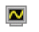 indicates an implementation
The implementation sets follow a hierarchical methodology that helps you to define dependencies for runs. All implementations at a given level of hierarchy are considered equivalent.
For example, consider the following figure:
This figure shows two top-level implementation sets, run_weekly and run_daily, which can be run independently because there is no dependency between them.
The simplest case of a dependency is visible in run_daily, where implementation 7 will only run after implementation 6 has successfully completed.
The set run_weekly contains two implementations, implementation 1 and implementation 2, and a child set myGroup. These two implementations have to successfully finish before the contents of myGroup , implementation 4 and implementation 5, are even considered for running. Specifically, for any child implementation set, simulation of any sibling implementations of its parent set have to finish before the implementations of the child implementation set can be released to run.
Additionally, within run_weekly, implementation 3 is a dependent of implementation 2. This means that implementation 3 will be scheduled to run only when the simulation of implementation 2 finishes. The preference Maximum implementations to run in parallel determines the number of implementations that can run at any given time.
When a parent implementation or set fails or is stopped, all its dependencies are stopped. For example, in the given illustration, if implementation 6 fails, then implementation 7 is stopped. Similarly, if implementation 2 fails or is stopped, then implementations 3, 4, and 5 are stopped.
The Priority value also determines the order of simulation runs. However, Verifier honors this value at the level where the implementation exists in the hierarchy. For example, consider that implementation 2 has a higher priority than implementation 1. If you run the implementation set run_weekly, then implementation 2 runs first. Similarly, when you run myGroup, implementations 4 and 5 will run in the order of their specified Priority value. Again, if implementation 4 has the highest priority of all the implementations, it will run only after the simulation of its parent has finished.
The key points to remember about an implementation set hierarchy are as follows:
- An implementation that is a child of an implementation set is also considered to be at the top level in the hierarchy, and is not a dependent.
- An implementation that is a child of another implementation is considered as a dependency of the parent implementation.
-
An implementation set that is a child of an implementation set is considered a dependency of the parent set.
To run implementation sets in Batch Run mode and honor the Maximum implementations to run in parallel and Maximum batch runs to start in parallel settings, enable the distributeImpSet environment variable. To ensure that implementations within implementation sets are distributed according to these settings in batch mode, the implementation must not have any hierarchy or dependencies. In case of hierarchical implementation sets, all implementations of a hierarchical branch must be included in the same batch run, which makes it impossible to distribute these implementations between different runs.
Consider the following points when creating implementation sets:
- An implementation within an implementation set or a group must be unique.
- An implementation set name must be unique in the hierarchy.
- The Run button is available only at the top level in an implementation set.
- You can modify the Run, Priority, and EstRunTime values for the implementation anywhere on the Run tab.
- You can drag an implementation and drop it into a group or implementation set.
- You cannot add a local and referenced implementation into the same top-level group if they have the same library, cell, view, and history.
Creating and Deleting Implementation Sets
To create an implementation set:
-
Right-click the implementations area and choose Create New Implementation Set.
If you want to create a sub set in an existing implementation set, right-click the existing set and choose Create New Implementation Set. - Type the name of the implementation set in the displayed form.
- Click OK.
The new set is added to the Implementation Sets node, which is added below the Implementations node, if it is not already present..
To edit an implementation set name:
To add an implementation cellview to an implementation set:
-
Right-click the implementation cellview in the Implementations node and choose Add to Implementation Set. You can select multiple implementation cellviews.
A hierarchical list of existing implementation sets is displayed. For every set, a pair of sub-menu items are displayed, where the first item allows adding the implementation to the set on the first level. The second item in this sub-menu allows adding the implementation as a dependency of existing implementations in the set.
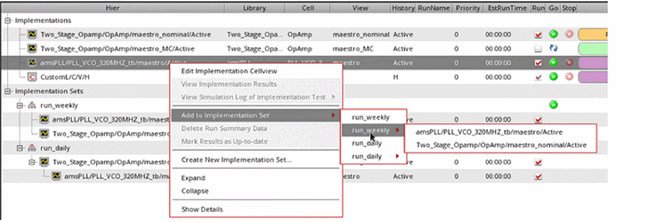 -
Choose the implementation set.
You can add an implementation to multiple implementation sets.
Alternatively, you can drag an implementation from its source location and drop it to the required destination.
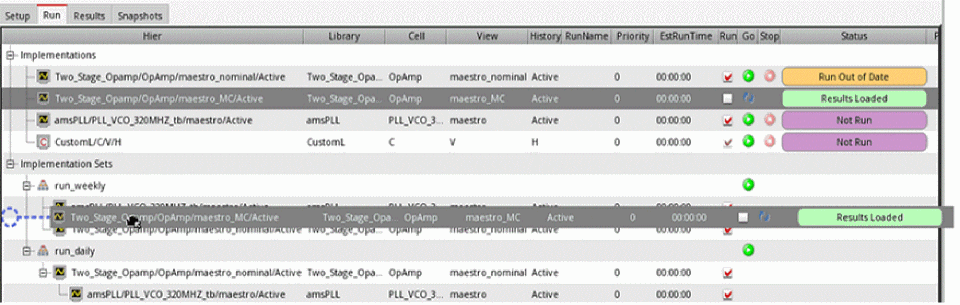 - Click OK.
Verifier adds the selected implementation cellview to the specified implementation set.
To remove an implementation set, or an implementation cellview from an implementation set:
-
Right-click the implementation cellview in the Implementation Sets node and choose Delete Implementation Set.
Verifier displays a prompt to confirm the removal. - Click OK.
The implementation set or cellview entry is removed from the Implementation Sets node.
Rearranging Implementation Sets
To rearrange an implementation set or cellview:
- Select the implementation set or cellview from the Implementation Sets node.
- Click the Up, Down, Left, or Right arrow buttons on the toolbar to change the sequential order.
When you choose to run the cellviews of an implementation set, the order in which they are run depends on their order in the Implementations node. Rearranging the cellviews under the Implementations Sets node does not reflect on the Setup page.
Simulation of Implementations
Verifier lets you simulate implementation cellviews individually, serially, or in parallel. You can use implementation sets to organize the implementation cellviews and their runs. You can configure how you want to run implementations.
It is possible to run implementations from another application and load the run results in Verifier. For details, see Implementation Runs in ADE Verifier and Implementation Sets.
For information on using a batch script to simulate implementations, see Batch Scripts in ADE Verifier.
If you want to make changes to your implementation cellview source when its simulation is running, ensure that the option to ignore the design changes made during the runs is enabled. For this, set the environment variable ignoreDesignChangesDuringRun to t in the .cdsenv or .cdsinit file.
You can view the current simulation status of implementation cellviews from their Status indicators. For details, see Simulation Status of Implementations. It is possible to stop a simulation that is in progress. The following figure shows the run controls of Verifier.
You can show or hide the columns of the implementations list in the Run tab. For this, right-click anywhere on the column heading in the implementations area and select the columns you want to show. Verifier hides the columns that are not selected.
To sort columns, you can use the drag-and-drop method and change the display of columns. Additionally, you can specify the default column order and hidden columns by using the environment variables runColumnOrder and runHiddenColumns.
- When you run an implementation cellview, only the enabled tests of that cellview are run. The disabled tests are not run.
-
If the current
verifiercellview is opened in read-only mode and Verifier is set to store the run summary data in a directory, you can run the implementation cellviews. If Verifier is set to store the run summary data in the current cellview, you cannot run the implementation cellviews because Verifier cannot write to the read-only cellview. These settings are available in the Run tab of Change Referenced Cellview Form. -
You can choose the appropriate job policy that must be applied to all implementation runs by setting the following preferences or their corresponding environment variables:
Preferences Corresponding Environment Variable
You can also view the status of simulations that are currently running in the Run tab. Move the mouse pointer to the Status column of a simulation to see the number of simulation points submitted, completed, or failed.
Running and Stopping Simulations
To run all the implementations organized in an implementation set:
To run an individual implementation cellview:
To run multiple implementation cellviews:
-
Do one of the following:
- Ensure that you have not selected any cellview or implementation set if you want to run simulations for all the implementation cellviews.
- Select the relevant implementation sets or implementation cellviews if you want to run simulations for only those cellviews.
Implementation cellviews can run serially or in parallel, depending on the value set in the Maximum implementations to run in parallel preference option. - Click Run on the toolbar.
Verifier runs the implementation cellviews and lets you monitor their status.
If the implementation cellview uses the integrated history management, you receive a popup asking you to convert the cellview to use the separate history management scheme.
For information on running simulations on referenced cellviews, see Simulation of Implementations Externally.
To stop a run that was started from Verifier, do one of the following:
- Click Stop on the toolbar.
- Click Stop corresponding to the implementation cellview you want to stop.
To view the requirements associated with an implementation in the Run tab, right-click and select Show Details.
Simulation Status of Implementations
You can monitor the run status of your verification project using the Status column on the Run tab. This column displays each implementation cellview or custom implementation with its corresponding status indicators.
The following table describes these indicators.
Report Identical Histories
By default, before running a simulation, the setup details are not compared with the loaded history. The design of many verification blocks might not have changed and this can result in running a number of redundant simulations with the same setup. To avoid this, choose Edit - Preferences and enable the check for Report identical histories before run. This check does the following:
- For implementations with 'Active' history, compares the active setup with the setup from the loaded history, and runs simulation only if the setup is unique. If any identical history is found, it is reported.
- For implementations with a named or specified history such as 'Interactive.0', compares the setup of the specified history and the loaded history, and runs simulation only if the setups are different. If any identical history is found, it is reported.
Simulation of Implementations Externally
In the normal run mode, the current Virtuoso session is used to launch ADE Assembler in the background and run simulations. This works well for short simulations. However, for simulations that run for longer durations, you might prefer to launch an independent Virtuoso session. The Batch Run feature typically launches an independent Virtuoso session in nograph mode that allows running your simulations outside of the current Verifier session. It launches without nograph mode if you select the Debug mode, open implementation interface preference. The Batch Run includes the following process:
- Creates a small Virtuoso batch script.
- Starts the batch script in the background. This batch script internally launches Virtuoso, which creates a new Verifier session. The new Verifier session runs the simulations.
- Triggers automatic loading of results when the batch run is finished. In addition, the status information is continuously sent to the current Verifier session to monitor the progress.
The main advantage of using the Batch Run is that the implementation simulation run and the Virtuoso GUI session are two independent Virtuoso processes. It minimizes the impact on the performance of Verifier. The Verifier or Virtuoso process can be closed without the risk of impacting the simulation run. The flow is particularly useful for long simulation runs. Splitting the simulation into multiple independent processes minimizes the risk of unexpected failures impacting the overall results. You can start a batch run by choosing Batch Run from the Run modes combo box on the toolbar and clicking the run button on the toolbar.
Every time you start a batch run, it automatically creates a script in the following format:
verifRun_<library>_<cell>_<view>_<id>.script
The corresponding log file is saved in the following format:
verifRun_<library>_<cell>_<view>_<id>.log.
Here, <library>, <cell> and <view> indicate the Verifier cellview which initiates the batch run, and <id> is an integer value starting from 0, which is reset at the end of the run.
Forexample, if the current Verifier cell name is TOP_verification, the library in use is Two_Stage_OpAmp, the view is verification, and the id is 21, the script file is named asverifRun_Two_Stage_OpAmp_TOP_verification_verification_21.script.
Running and Stopping Implementations in Batch Mode
To run an individual implementation cellview in batch mode, do the following
- Select an implementation.
-
Select Batch Run in the Run modes combo box on the toolbar.
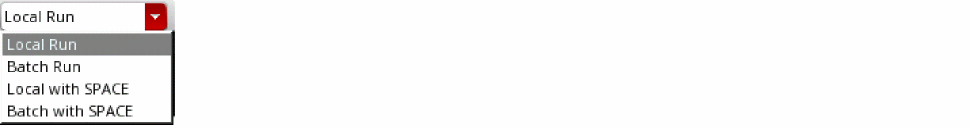 -
Click the Run button (
 ) on the toolbar.
) on the toolbar.
To run all the implementations organized in an implementation set in batch mode:
Verifier runs the implementation cellviews. You can monitor their status.
To stop a run that was started from Verifier, do one of the following
- Click the Stop button ( ) on the toolbar, at the bottom-left side of the screen, or corresponding to the implementation cellview.
- Click the Stop button ( ) corresponding to the cellview you want to stop.
- Right-click the cellview you want to stop running and choose Stop Simulation. Unlike the internal simulation, batch mode simulation can be started concurrently. If one simulation is already running in batch mode, you can start simulation for other implementations to be run in batch mode.
-
Set the stopBatchRunOnServerClose environment variable to
t. Setting this environment variable closes all batch run simulations if the Virtuoso session that launched the batch run is closed.
Setting Up Pre and Post Simulation Operations in Batch Scripts
You can add pre- and post-simulation operations in your batch script file to automate operations for your batch runs. To do this, you must set the following SKILL variables in the CIW or the .cdsinit file before generating the batch script.
-
verifGetPreRunText: Specifies the text to be inserted before the simulation run command line. The text can be a string, symbol, lambda function, or a function. -
verifGetPostRunText: Specifies the text to be inserted after the simulation run command line. The text can be a string, symbol, lambda function, or a function.
-
In the CIW or the
.cdsinitfile, specify the following:verifGetPreRunText = "; Before Run" verifGetPostRunText = "; After Run". - On the Verifier toolbar, click Run.
The specified text is added to the script file, as shown below:
-
In the CIW or the
.cdsinitfile, specify the following:verifGetPreRunText = "lambda((sess id mode) sprintf(nil "info(\"User %s running cellview %s id=%L mode=%s\\n\")" getLogin() buildString(verifGetSessionCellView(sess) "/") id mode))" verifGetPostRunText = lambda((sess id mode) sprintf(nil "; %L %L %L\n" sess id mode)) - On the Verifier toolbar, click Run.
The specified text is added to the script file, as shown below:
Distributing Batch Simulation Runs
You can start multiple implementations and run simulations in parallel in the batch mode. Running simulations in batch mode launches an independent Virtuoso session in -nograph mode on the same host machine. These multiple runs imply that multiple ADE Assembler sessions are launched in the current session. To avoid overloading the current Virtuoso session, you can use load balancing commands to distribute the batch runs to different hosts. When using distributed procession of simulation runs, Assembler launches multiple Virtuoso ICRPs (IC Remote Process). The batch runs are distributed to these Virtuoso ICRPs on different hosts on a server farm.
virtuoso –nograph process launched by Assembler when you select Batch Run and click the Run button in Verifier. This process runs a simulation, evaluates the results, and send the results back to Assembler. The job policy setup in Assembler manages the distribution of simulations.
Verifier lets you specify settings to launch the nograph session used by the batch run. This nograph session runs the implementations in multiple ADE Assembler processes. These ADE Assembler processes can use a job policy to further distribute the ICRPs.
If you have enabled the Optimize Single Point Run option in your Job Policy Setup form in ADE Assembler for a single point run, ADE Assembler optimizes the run by doing the following:
- It completes the netlist generation and expression evaluation tasks inside the ADE Assembler process
- It runs the simulation as per the distribution method specified by the job policy.
Therefore, the ADE Verifier process is blocked by these tasks and the Message Processing System messages, such as restart or stop simulations, in a batch run are possibly lost because of the blocking. The Optimize Single Point Run is automatically disabled by setting the environment variable "adexl.distribute useSameProcess" to nil during simulation runs started from Verifier.
To specify the batch run settings, use the preference option Executable or script for batch runs and do one of the following:
-
Specify an external program to use when running Verifier with Batch Run. By default, the external program is '
virtuoso'. -
Use
bsubto submit the launched Virtuoso processes to the job queue on a farm.
bsub -K -P IC:6.1.8:RD:test -R select[OSREL==EE60] -R rusage[mem=3000] -W 200:0 -sp 50 -o /tmp/bsub.job virtuoso -
Specify a script that provides additional functionality.
#!/bin/csh -f echo "starting bsub virtuoso $*" bsub -K -P "IC:6.1.8:RD:test" -R "select[OSREL==EE60]" -R "rusage[mem=3000]" -W 200:0 -sp 50 -o /tmp/bsub_job_$$ virtuoso $* set res=$status echo "done bsub virtuoso $*" echo "status = $res" echo "bsub output in /tmp/bsub_job_$$]" exit $res -
Specify a variant of the above script in your
.cdsinitfile.
envSetVal("verifier.preferences" "binaryName" 'string "bsub -K -P IC:6.1.8:RD:test -R select[OSREL==EE60] -R rusage[mem=3000] -W 200:0 -sp 50 -o bsub.log virtuoso")
Alternatively, you can use all the above options with the environment variable binaryName.
Simulation Runs based on Priority and Estimated Run Time
You can specify Priority, EstRunTime, Maximum implementations to run in parallel, and Maximum batch runs to launch in parallel for an implementation in the Setup tab and schedule the simulation of runs based on the specified values. The Priority and EstRunTime columns are also available on the Run tab and are synchronized with the columns on the Setup tab.
These specified values influence factors such as the scheduling order and the queue for an implementation.
-
The specified priority defines the sequence of running simulations. The higher the numeric value specified, the higher the priority. For implementations with the same priority, the order in the UI decides the priority. The EstRunTime is only used when running simulations in batch mode, and it influences the distribution of the runs to batches.
In this example, without any parallel runs, the order of execution would be:
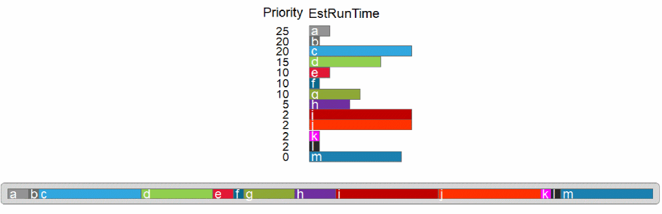 -
Each batch run gets one implementation initially based on the specified priority order. Each implementation goes into the batch run with the least estimated run time, until all implementations are assigned to a batch run.
For example, when you set Maximum implementations to run in parallel to a number > 1, such as 3, the order of execution is as follows:
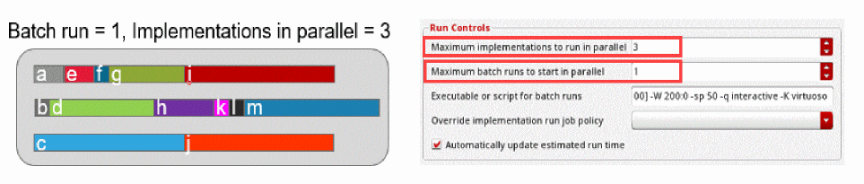When you set both Maximum implementations to run in parallel and Maximum batch runs to run in parallel to a number > 1, such as 3, the order of execution is as follows:
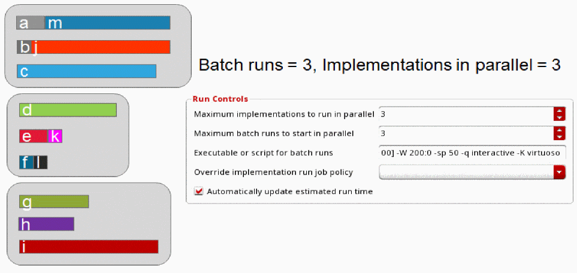Here, the runs are assigned to the job queue with the least estimated run time.When the Automatically update estimated run time check box is selected and the Run check box is deselected, EstRunTime is not changed for implementations. The Automatically update estimated run time setting enables auto update of the EstRunTime numbers after simulation runs are triggered from Verifier.
You can also set the Display estimated run time as: option to Seconds or Formatted Time.
In the Setup or Run tab, you can specify the estimated run time as follows:
- Number of seconds. For example, 42s.
- Number followed by single character unit for hours, minutes or seconds. For example, 42s, 33M, 3D.
- Number of days (optional) followed by H:M:S. Here, hours(H) and Minutes(M) are optional. For example, '1D 3:42:59', '2D 12:21', '3:56'.
Alternatively, you can specify the estimated run time format using the estRunTimeDisplayFormat environment variable.
Environment Setup to Run Simulations in ADE Verifier
You can access the environment setup for running simulations from Verifier by using the Environment Variables table in the Run tab of the Preferences form.
In this table, the following environment variables that appear in a read-only state are always enabled by default because the tool requires these to configure the simulation environment. These environment variables cannot be modified and are always displayed at the bottom of the table.
-
"adexl.gui" "showSimLogForOnePointSim" -
"asimenv" "showConvertNotifyDialog" -
"adexl.gui" "showRunLog" -
"adexl.distribute" "useSameProcess"
This section describes how you can modify the Verifier environment to run simulations. It covers the following topics:
- Creating a CSV File for Defining Environment Variables
- Adding and Removing Environment Variables
- Modifying Environment Variables
- Creating a CSV File for Defining Environment Variables
- Exporting Environment Variables to a CSV File
- Setting the Environment Variable Override Value
The Environment Variables table contains the following columns:
The table also offers the following shortcut menu commands:
| Command | Description |
|---|---|
|
Adds a new environment variable in the Verifier session. See Adding and Removing Environment Variables. |
|
|
Modifies the values for Name, Tool[.Partition], or the OverrideValue of the selected environment variable with values that are not in use. See Modifying Environment Variables. |
|
|
Removes the selected environment variables from the list. See Adding and Removing Environment Variables |
|
|
Imports environment variables from a CSV file. See Creating a CSV File for Defining Environment Variables. |
|
|
Exports environment variables to a CSV file. See Exporting Environment Variables to a CSV File. |
|
|
Resets the value of the selected environment variable to its default value. See Setting the Environment Variable Override Value. |
|
|
Resets the value of the selected environment variable to its current value. See Setting the Environment Variable Override Value. |
Creating a CSV File for Defining Environment Variables
To create a CSV file that defines environment variables in the current Verifier session:
- Set the envVarConfigFile environment variable.
- Create a new Verifier cellview.
- Choose Edit – Preferences – Run.
The table loads and displays the environment variables that you have defined in the CSV file.
If a CSV file is not specified, the table displays the following default rows:
Adding and Removing Environment Variables
To add a new environment variable to the current Verifier session:
-
Right-click anywhere in Environment Variables table and choose Add Environment Variable.
The Add Environment Variable form appears.
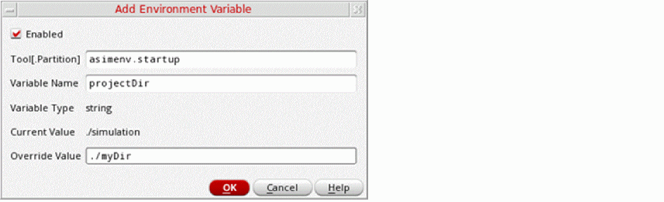 - Select the Enabled check box to specify a new value to override the current value of an environment variable.
- In the Tool.[Partition] field, specify the tool and partition name of the environment variable that you want to add.
-
In the Variable Name field, specify the name of the environment variable.
On specifying valid values in the Tool.[Partition] and Variable Name fields, the values for Variable Type and CurrentValue are populated automatically. - In the Override Value field, specify a value that will override the CurrentValue during simulations.
The specified environment variable is added.
To remove an environment variable in the current Verifier session:
- In the Environment Variables table, select one or more rows of values that you want to remove.
- Right-click and choose Remove Environment Variables.
The selected environment variables are removed.
Modifying Environment Variables
To modify an environment variable in the current Verifier session:
-
Right-click an existing row in the Environment Variables table and choose Modify Environment Variable, or double-click anywhere on a row in the table.
The Modify Environment Variable form appears.
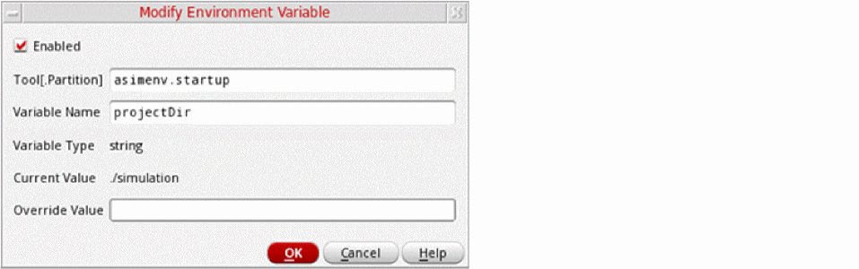 -
In the form, select or deselect the Enabled check box.
Selecting the check box will allow overriding the current value of an environment variable with the specified value. - In the Tool.[Partition] field, modify the tool and partition name of the environment variable.
-
In the Variable Name field, modify the name of the environment variable.
On specifying valid values in the Tool.[Partition] and Variable Name fields, the values for Variable Type and CurrentValue are populated automatically. - In the Override Value field, modify the value that will override the CurrentValue during simulations.
Saving and Importing Pre-Defined Environment Variables from a CSV File
To create a CSV file that contains the environment variables defined in the current Verifier session:
- Set the envVarConfigFile environment variable.
- Create a new Verifier cellview.
- Choose Edit – Preferences – Run.
The table loads and displays the environment variables that you have defined in the CSV file. If a CSV file is not specified, the table displays the following default row:
To import environment variables from an existing CSV file:
-
Right-click anywhere in the Environment Variables table and choose Import Environment Variables from CSV.
The Import Environment Variables from CSV file form appears in which you can browse and select a file that you want to add. -
Click Open.
The environment variables are added to the Environment Variables table.
Exporting Environment Variables to a CSV File
To export environment variables to a CSV file:
-
Right-click anywhere in the Environment Variables table and choose Export Environment Variables to CSV.
The Export Environment Variables to CSV file form appears. - Browse and specify a file in which you want to export the environment variables.
-
Click Save.
The environment variables are exported into the specified file.
Setting the Environment Variable Override Value
To set the override value of an environment variable to its default value:
- In the Environment Variables table, select one or more rows of environment variables for which you want to reset the override value.
- Right-click and choose Set Environment Variable Override Value to Default Value.
The Override Value of the selected environment variables is reset to their default value.
To set the override value of an environment variable to its current value:
- In the Environment Variables table, select one or more rows of environment variables for which you want to reset the override value.
- Right-click and choose Set Environment Variable Override Value to Current Value.
The Override Value of the selected environment variables is reset to their current value.
Simulation Run Results
After an implementation cellview is run successfully, you can review its run results from Verifier, Virtuoso CIW, and the default Virtuoso application of the implementation cellview. You can also access the simulation log generated by the simulator for an implementation test run.
Related Topics
Viewing Run Results Using the Information Assistant
Viewing Run Results Using the Information Assistant
To view the run results of an implementation cellview using the Information assistant:
-
Open the Information Assistant pane.
The assistant appears in the right pane. -
Do any of the following, as required:
-
Select the implementation cellview. The Information assistant displays the simulation run details, such as the run mode, tests, simulation corners, run history, and other details.
- The selected implementation cellview can be a cellview that was run from Verifier, or a cellview whose results were loaded in Verifier.
-
You can copy the value of a result field. For this, right-click the result field and choose Copy String. You can also select the field and press
Ctrl+Cto copy the text. - When you right-click a result field, Verifier also provides the options to view and edit the results in the main application of the implementation cellview. These options are also available in the popup menu in the Setup tab.
- Right-click the implementation cellview whose results can be loaded in Verifier and select View Implementation Results. Verifier launches the application of the implementation cellview, such as ADE Assembler, where the results are displayed. If the implementation cellview uses the integrated history management, you receive a popup asking you to convert the cellview to use the separate history management scheme.
- View the simulation run status and details in the Virtuoso CIW and the simulation application log.
-
Select the implementation cellview. The Information assistant displays the simulation run details, such as the run mode, tests, simulation corners, run history, and other details.
The following figure illustrates how to access the run results of an implementation cellview in the Information assistant.
Related Topics
Results of Failed Outputs or Tests
Viewing Results from an Incomplete History
Results of Failed Outputs or Tests
You can view the details of the tests or outputs that have failed simulation checks. These details are shown in the Failures row of the Information assistant. The Failures row shows the first failure from the complete list. However, you can control the maximum number of failed tests or outputs that are shown by using the environment variable.
The following figures show the Failures row in the Information assistant.
You can also choose to rerun any unfinished or failed points from the loaded implementation history of selections by choosing the Rerun Unfinished/Error Points menu command on the Run tab. This menu command is available for local and batch runs, referenced implementations, as well as single or multiple selections on the Run tab after the simulation run is complete. Alternatively, you can use the
Viewing Results from an Incomplete History
In case of a large design testbench or a large design with a run plan, simulations might run for several days. The results become available after the simulation completes and the history is created. Occasionally, it becomes necessary to use an incomplete history to load and view the partially available results of such simulations. Viewing the available results also helps in determining the result trends. Verifier lets you load and view the partial results of in-progress or incomplete simulations.
To load external results from an incomplete history:
-
In the CIW, set the environment variable allowLoadingIncompleteHistory
.
Setting this variable shows the run status from the maestro view in the Information assistant as well as the tooltip of the Status column on the Run page. - In ADE Assembler, run a simulation as follows:
-
In Verifier, view the simulation results as follows:
-
Open a
verifiercellview that contains the samemaestrocellview as an implementation.
Ensure that the corresponding requirements exist in the Requirements pane. If not, right-click the implementation and select Create Requirements Hierarchically. - Click the Reload Simulation Results button.
- The external results are loaded.
-
Click the Run tab.
The Run page showsIncomplete Results Loadedin the Status column. When you click the implementation, the Information assistant displays Pending or Running in the Status column depending on the number of simulations or points that are still pending or running.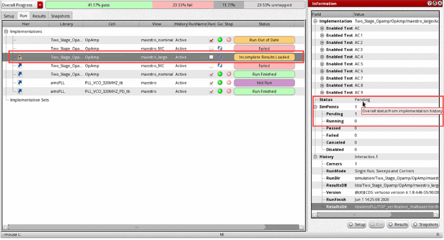 -
Click the Results tab.
The Results page lets you evaluate outputs with partial or incomplete results. When you click the implementation, the Information assistant shows the partially available results in the OverallStatus row.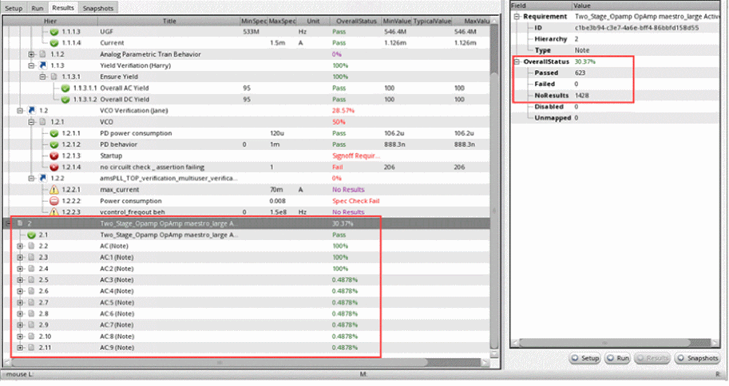
-
Open a
Viewing Job Policies for Implementations
In case of a large design testbench or a large design with a run plan, simulations might run for several days. The results become available after the simulation completes and the history is created. Occasionally, it becomes necessary to use an incomplete history to load and view the partially available results of such simulations. Viewing the available results also helps in determining the result trends.
Viewing Simulation Logs
The simulator application, such as Spectre Circuit Simulator, that runs implementation cellviews logs details of each test run. You can access such simulation logs from Verifier. The following figure illustrates how you can access the simulation log of a test.
You can access the simulation log of an implementation cellview if the simulation has completed and the results directory exists. Verifier must have access to the history of the run. The test must be defined and enabled in the history.
To view the simulation log of an implementation test:
-
Do one of the following:
- Select the implementation from the Setup or Run tab.
- Select a requirement mapped to the implementation in the Setup or Results tab.
You can also select a status value in the Run or Result tab. -
Right-click, select View Simulation Log of Implementation Test, and then select the test name.
If the implementation cellview uses the integrated history management, you receive a popup asking you to convert the cellview to use the separate history management scheme.
The simulation log is displayed in a new text window.
Batch Scripts in ADE Verifier
You can generate a batch script from Verifier, which is also referred to as a regression script. You can use this script to start Verifier from the command line in non-graphical mode with a cellview and run its implementation cellviews.
For information on simulating implementation cellviews from the Verifier graphical user interface, see Simulation of Implementations.
Related Topics
Reviewing and Refining a Batch Script
Running and Stopping a Batch Script
Generating a Batch Script
Before you generate a batch script, save the Verifier setup for which you want to generate the script to a cellview of type verifier.
To generate a batch script for the current cellview:
-
Do one of the following:
The Batch Script File Name dialog box displays. -
Specify the location and filename of the batch script.
The default location is the current directory and the default filename is in the format currentCellview_run. For example,TOP_verification_run.
You can specify a new location by changing the directory name. If the specified directory does not exist, it is created automatically. - Click Save.
Verifier saves the batch script in the specified location using the specified filename.
Reviewing and Refining a Batch Script
You can open the batch script you generated from Verifier in an editor and review the script.
The following example shows a sample script generated in ADE Verifier.
The script used in this example is standard .csh script that sets up some shell environment variables to specify the library, cell, and view. With this script, Virtuoso is launched in the optionally used -nograph mode. The script sends the commands between the two SKILLSCRIPT segments to Virtuoso as SKILL commands to run.
The Verifier SKILL functions used in this SKILL script do the following:
The use of unwindProtect is to ensure sure that the script always exits even if there is a SKILL error. In case of an error, the return value is 255.
If required, you can edit the batch script appropriately. For example, if you want to run the implementation cellviews that belong to a specific implementation set, add -run implementation_set_name to the script. For more details on refining the batch script for a scheduled run, see Scheduling Runs.
When a batch script run is completed, the overall verification status is displayed by default. The following snippet shows some example messages that Verifier displays at the end of a batch script run. The last message provides the overall verification status.
If you want to view the overall verification status of only specific requirements, instead of the status of the project, use -returnStatus RequirementIDlist. You can specify a list of requirement IDs or an implementation set that contains the requirements.
Running and Stopping a Batch Script
You can run a batch script from the command line. You can also schedule a batch script to run through a cron job. For details, see Scheduling Runs.
-
Run the script from the command line.
If you want to run the implementation cellviews that belong to a specific implementation set, use the optional-runargument with the implementation set name. For example:
$./TOP_verification_run -run run_weekly
Verifier runs the specified batch script and displays appropriate messages.
When the batch script run is completed, it either returns 0 to indicate the successful completion of the script or 1 to indicate failure. For example, the following return value indicates that the run was successfully completed:
To stop a running batch script:
-
Press
Ctrl + Zto stop the run manually. -
Run the following command to kill the Virtuoso and Verifier processes.
$kill -9 $$
The batch script run stops, along with Virtuoso and Verifier.
Scheduling Runs
You can schedule implementation cellview runs using batch scripts. For this, generate the batch script and set cron jobs to run those scripts, as required. For details on batch scripts, see Batch Scripts in ADE Verifier.
If you want to schedule the run of only specific implementation cellviews, organize those cellviews in an implementation set and edit the script to run that set. Then set a cron job to run the batch script.
The following set of steps describe how to set a batch script and schedule its cron job:
- Open the Verifier cellview.
-
Organize the implementation cellviews in implementation sets.
For this example, assume thatrun_weeklyhas been created and some implementation cellviews are added to this implementation set. For more details, see Implementation Sets. -
Create a batch script called
weekly_run_script.
For more details, see Batch Scripts in ADE Verifier. -
Edit the script appropriately.
For example, editweekly_run_scriptto run the implementation cellviews in the setrun_weekly. The following snippet shows a sample script that uses therun_weeklyimplementation set. -
Add the cron job entry, as required.
The cron job calls do not load any environment settings automatically, such as sourcing.cshrc. Therefore, ensure that the requirement settings, and software and project setups are sourced. Also ensure that the current directory is changed appropriately before the batch script is run.
The cron job runs the batch script at the scheduled time.
Return to top